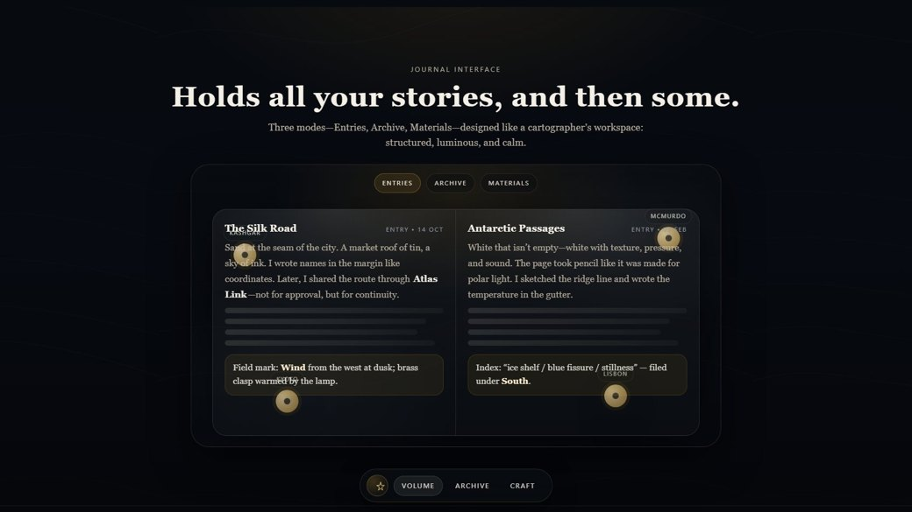

Sol 6.2
Codex CLI · xhigh · NJU Link · exit 0
- 执行命令 63
- 推理记录 35
- 模型消息 10
- 网络检索 2
- 开启会话 1
- turn.started 1
- 完成轮次 1
OMNIALE · WEEK 6
听懂中文录屏里的 17 条指令，在旅行手账站点上修改目标元素，落实三组撤回并保留其余交互。

输入为原始 HTML 和 2 分 54 秒的中文有声录屏。根据鼠标位置和口头要求更新原页，提交完整可打开的 HTML。终态需要结合撤回顺序判断。
初评采用 464-audit-v1.0 的 EFS。定位、编辑落实、无损和撤回的权重依次为 10%、50%、20%、20%。
| 模型 | 初评分 | 实测强度 | 用时 | 请求 |
|---|---|---|---|---|
| Sol 6.2 | 65.58 | xhigh | 45 分 51 秒 | 81 |
| DeepSeek V4.1 Flash | 56.45 | xhigh | 31 分 09 秒 | 104 |
Codex CLI · xhigh · NJU Link · exit 0
Codex CLI · xhigh · DashScope · exit 0
Sol 在初评中落实的任务检查项为 20/26，DeepSeek 为 16/26。点指目标、交互状态和最终样式按各自的检查项计分。
录屏里有三组撤回，其中最后一组同时撤回两处早先修改。页面结果保留初评对撤回和无损的独立计分。
初评的无损分包含对样式和结构额外改动的判定。下方各单项分和总分来自同一份初评记录。